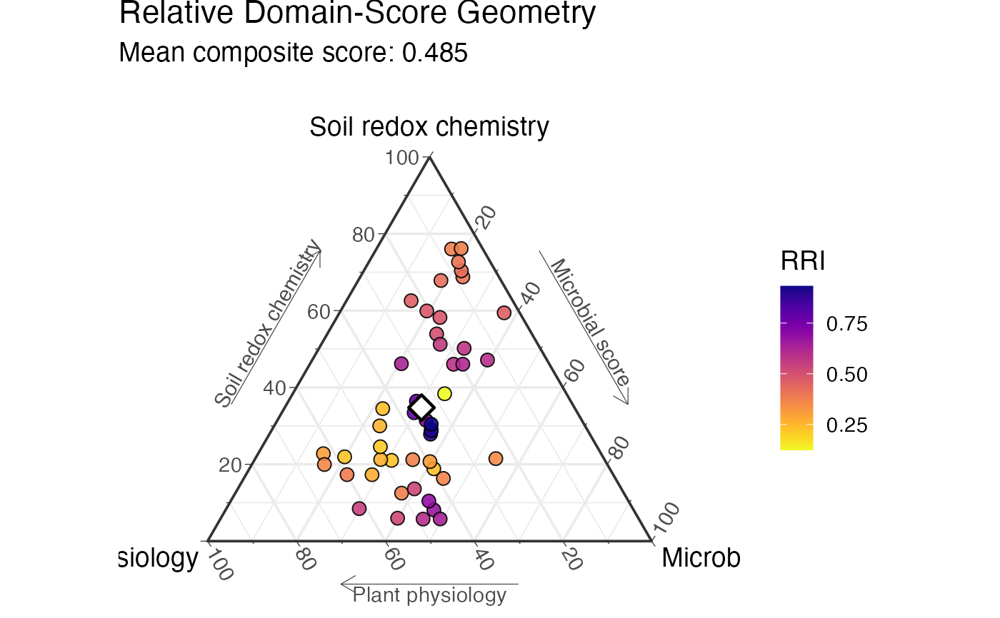
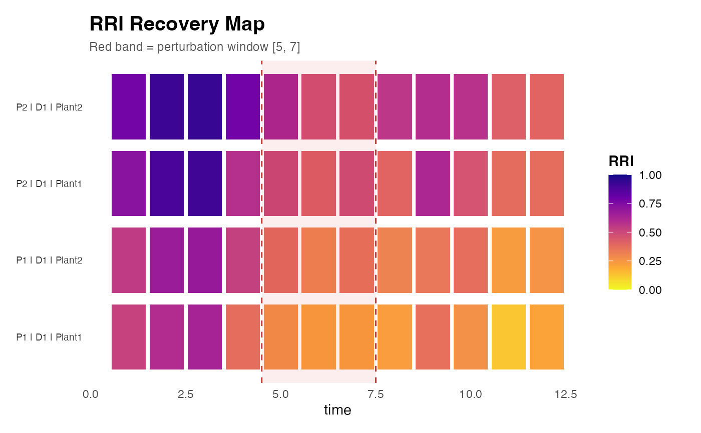
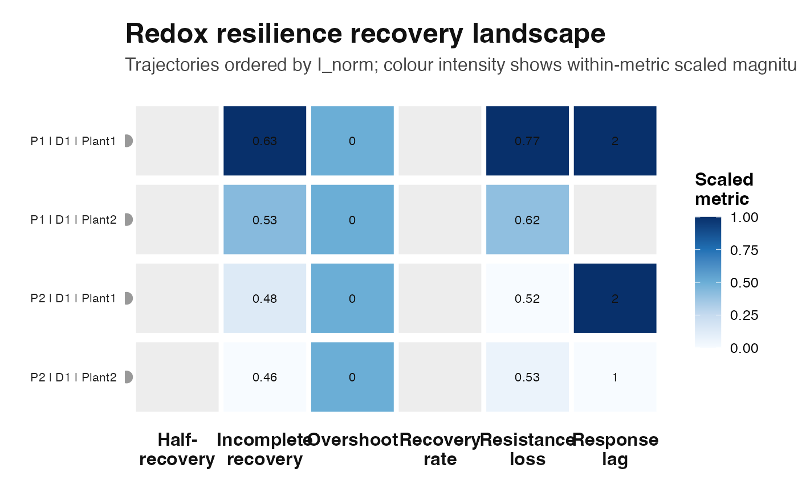

Demonstrates a complete RedoxRRI workflow using a synthetic
plant-soil-microbiome time-series dataset generated by
simulate_redox_holobiont().
Details
This example shows how to:
Simulate a spatio-temporal holobiont redox dataset.
Compute sample-level Redox Resilience Index scores.
Inspect compositional Physio-Soil-Micro RRI allocation.
Quantify perturbation-recovery metrics.
Generate ternary and recovery-metric visualizations.
The simulated dataset contains plant physiological variables, rhizosphere oxygen-flux proxies, soil redox chemistry, hydrological variables, dissolved organic carbon, microbial abundance features, microbial redox trait proxies, and optional functional gene abundance or MetaT-style expression features.
The generated data are fully synthetic and are provided for examples,
testing, benchmarking, teaching, and method development. They are not
calibrated to any specific ecosystem. Users may replace these simulated
inputs with their own external datasets, provided that rows are aligned
across id, ROS_flux, Eh_stability, and micro_data.
Examples
# Simulate a compact synthetic holobiont redox time series
sim <- simulate_redox_holobiont(
n_plot = 2,
n_depth = 1,
n_plant = 2,
n_time = 12,
p_micro = 20,
seed = 1
)
# Inspect the returned data layers
names(sim)
#> [1] "id" "forcing" "latent_state"
#> [4] "soil_data" "plant_data" "micro_gene_abundance"
#> [7] "micro_metat_counts" "micro_metat_metadata" "micro_traits"
#> [10] "fluxes" "conservation_checks" "ROS_flux"
#> [13] "Eh_stability" "micro_data" "latent_truth"
#> [16] "graph" "metadata"
head(sim$id)
#> plot depth plant_id time row_id unit_id history_pair history
#> 1 P1 D1 Plant1 1 1 P1.D1.Plant1 P1_D1_Pair1 naive
#> 2 P2 D1 Plant1 1 2 P2.D1.Plant1 P2_D1_Pair1 naive
#> 3 P1 D1 Plant2 1 3 P1.D1.Plant2 P1_D1_Pair1 preconditioned
#> 4 P2 D1 Plant2 1 4 P2.D1.Plant2 P2_D1_Pair1 preconditioned
#> 5 P1 D1 Plant1 2 5 P1.D1.Plant1 P1_D1_Pair1 naive
#> 6 P2 D1 Plant1 2 6 P2.D1.Plant1 P2_D1_Pair1 naive
#> scenario rescue cycle phase event_intensity WFPS water_table_cm
#> 1 flood_drain none 1 baseline 0.2324218 0.6353468 -9.474277
#> 2 flood_drain none 1 baseline 0.2324218 0.6637002 -11.459015
#> 3 flood_drain none 1 baseline 0.2324218 0.6353468 -9.474277
#> 4 flood_drain none 1 baseline 0.2324218 0.6637002 -11.459015
#> 5 flood_drain none 1 disturbance 0.8007374 0.7764130 -19.348913
#> 6 flood_drain none 1 disturbance 0.8007374 0.8047664 -21.333651
head(sim$ROS_flux)
#> SPAD FvFm PhiPSII NPQ ROL root_biomass
#> 1 43.21314 0.8111805 0.4600342 0.8281710 0.2919157 0.3672434
#> 2 42.90285 0.7940779 0.4785144 0.8229517 0.3086444 0.4109215
#> 3 41.87930 0.7956009 0.4501743 0.9869124 0.3426112 0.3704233
#> 4 43.30556 0.8006686 0.4226224 0.7321435 0.3675833 0.4160524
#> 5 43.03251 0.7951621 0.4643011 0.7043353 0.2848033 0.3896392
#> 6 41.53291 0.7815977 0.4398781 1.0932946 0.3048596 0.4274476
#> root_length_density root_porosity aerenchyma Fe_plaque Mn_plaque ROS_load
#> 1 2.192422 0.1661216 0.1169200 0.8460714 0.1199791 0.1337041
#> 2 2.375870 0.1661216 0.1169200 0.9427324 0.1366925 0.1851641
#> 3 2.205778 0.2139008 0.2164600 1.0143585 0.1446371 0.2018352
#> 4 2.397420 0.2139008 0.2164600 1.1486766 0.1667469 0.2009879
#> 5 2.286485 0.1648013 0.1141694 0.7412958 0.1013627 0.1678872
#> 6 2.445280 0.1738088 0.1329351 0.8394339 0.1166452 0.2974119
head(sim$Eh_stability)
#> Eh pH WFPS porewater_O2_mmol_L O2_supply_mmol_kg
#> 1 79.16540 6.614815 0.6353468 0.06532701 0.02109696
#> 2 57.68313 6.683446 0.6637002 0.05937033 0.01824650
#> 3 59.52019 6.544458 0.6353468 0.06760831 0.02087695
#> 4 42.90172 6.740838 0.6637002 0.06202258 0.02091144
#> 5 NA 6.614086 0.7764130 0.03553869 0.01332974
#> 6 -23.71957 6.549429 0.8047664 0.03176301 0.01223056
#> FeIII_poor_crystalline_mmol_kg FeIII_crystalline_mmol_kg FeII_mmol_kg
#> 1 62.23909 49.55814 15.91627
#> 2 66.46397 52.98563 17.09279
#> 3 62.34270 49.56736 15.80468
#> 4 66.48406 52.99553 17.06242
#> 5 61.62051 49.60201 16.48395
#> 6 65.63048 53.02967 17.85923
#> FeS_mmol_kg MnIV_mmol_kg MnIII_mmol_kg MnII_mmol_kg NO3_mmol_kg NH4_mmol_kg
#> 1 2.591153 8.969549 3.195660 3.385566 6.006986 4.320964
#> 2 2.776805 9.827208 3.508410 3.717581 6.842229 4.585395
#> 3 2.589918 8.982196 3.188202 3.380377 7.257302 4.645634
#> 4 2.777180 9.830914 3.507003 3.715282 7.438462 4.540967
#> 5 2.598186 8.890774 3.279046 3.380954 5.987253 4.574253
#> 6 2.799809 9.722313 3.608388 3.722498 6.814125 4.917289
#> SO4_mmol_kg sulfide_mmol_kg CH4_mmol_kg DOC_mmolC_kg humic_EAC_mmol_e_kg
#> 1 11.884452 0.3372905 0.12666646 10.10777 17.10458
#> 2 10.086161 0.4220204 0.11268872 13.11572 20.10804
#> 3 9.220480 0.4186171 0.10922705 10.10974 17.10660
#> 4 9.672569 0.4502589 0.07108761 13.11492 20.10863
#> 5 11.879512 0.3387132 0.11953959 10.11187 17.09968
#> 6 10.079653 0.4170266 0.10720589 13.11624 20.09913
#> humic_EDC_mmol_e_kg EAC EDC Cacc_EAC Cacc_EDC Cacc_total
#> 1 10.32313 275.1471 102.8598 113.36287 33.00524 146.3681
#> 2 12.57815 277.6209 113.1245 113.73872 37.14748 150.8862
#> 3 10.32112 260.2196 105.8267 104.69095 32.16087 136.8518
#> 4 12.57757 277.3299 112.6281 111.76758 36.75720 148.5248
#> 5 10.32804 274.3551 105.5526 88.22172 32.47663 120.6984
#> 6 12.58707 276.5201 116.7882 83.95054 37.64799 121.5985
#> Cacc_fraction net_oxidative_balance alpha_accept alpha_donate k_accept_h
#> 1 0.3872101 80.35764 0.5400038 0.5174896 0.05998253
#> 2 0.3861497 76.59125 0.5432729 0.5217925 0.05845397
#> 3 0.3738648 72.53009 0.5180733 0.4998871 0.06244316
#> 4 0.3808737 75.01038 0.5221668 0.5088702 0.06156552
#> 5 0.3177044 55.74509 0.4734499 0.4755821 0.04737050
#> 6 0.3091684 46.30255 0.4441794 0.4614250 0.04793463
#> k_donate_h pore_connectivity bulk_density_g_cm3 porosity Fe2.Fe3 Mn2.Mn4
#> 1 0.04032286 0.6961617 1.129109 0.5739210 0.1423673 0.3774511
#> 2 0.04135123 0.6989622 1.189882 0.5509879 0.1430962 0.3782947
#> 3 0.03901416 0.6961617 1.158238 0.5629292 0.1412266 0.3763419
#> 4 0.04272420 0.6989622 1.129488 0.5737780 0.1428061 0.3779182
#> 5 0.04338209 0.5778718 1.162186 0.5614393 0.1482070 0.3802767
#> 6 0.04997444 0.5229871 1.168458 0.5590724 0.1505074 0.3828819
#> NH4.NO3
#> 1 0.7193232
#> 2 0.6701610
#> 3 0.6401324
#> 4 0.6104712
#> 5 0.7639986
#> 6 0.7216317
head(sim$micro_data)
#> ASV1 ASV2 ASV3 ASV4 ASV5 ASV6 ASV7 ASV8 ASV9 ASV10 ASV11 ASV12 ASV13
#> 1 2403 3 10104 0 37034 58815 2714 1 24654 9189 986 3299 453
#> 2 3509 3 11117 0 1440 14627 0 0 4856 14260 12575 1525 6051
#> 3 8331 0 15842 0 18258 15882 11379 8 0 2054 2290 673 6234
#> 4 0 22 988 0 18044 4354 0 0 0 0 0 5216 2474
#> 5 4342 30 31680 8 7255 0 0 1 12330 2642 0 0 7353
#> 6 3621 0 3007 0 0 7671 0 38 5787 12164 3720 0 3950
#> ASV14 ASV15 ASV16 ASV17 ASV18 ASV19 ASV20
#> 1 2209 25693 582 6288 191 0 16212
#> 2 1657 12962 2170 119 139 7079 3603
#> 3 1154 0 11 1473 464 25287 8718
#> 4 0 13507 3548 1876 3240 30276 0
#> 5 0 5343 1951 0 1913 4637 4940
#> 6 701 1751 0 4553 390 20161 5803
head(sim$micro_traits)
#> EET_reduction Fe_oxidation Mn_oxidation denitrification DNRA
#> 1 0.1352521 0.16946569 0.14065867 0.1558493 0.07558379
#> 2 0.1632450 0.15495409 0.13123195 0.1650661 0.10489863
#> 3 0.1222986 0.17202382 0.12301065 0.1369774 0.06449516
#> 4 0.1590712 0.15507582 0.13221398 0.1594705 0.10428556
#> 5 0.1845902 0.12769821 0.10045885 0.2014679 0.10886337
#> 6 0.2024344 0.09960009 0.09481401 0.2577220 0.14920222
#> nitrification sulfate_reduction methanogenesis methane_oxidation
#> 1 0.1869803 0.11920006 0.011962309 0.11406674
#> 2 0.1731890 0.11810571 0.009867057 0.10687483
#> 3 0.1998454 0.08719975 0.009921862 0.14129346
#> 4 0.1844440 0.13453987 0.022561274 0.09040412
#> 5 0.1348070 0.16782067 0.003238584 0.07329345
#> 6 0.1197451 0.20061727 0.027499993 0.06112411
# Combine microbial abundance, trait, and gene-level features
micro_features <- cbind(
sim$micro_data,
sim$micro_traits,
log1p(sim$micro_gene_abundance)
)
# Compute RedoxRRI scores
res <- suppressWarnings(rri_pipeline_st(
ROS_flux = sim$ROS_flux,
Eh_stability = sim$Eh_stability,
micro_data = micro_features,
id = sim$id,
reducer = "per_domain",
scaling = "pnorm"
))
# Sample-level RRI scores
head(res$row_scores)
#> plot depth plant_id time row_id unit_id history_pair history
#> 1 P1 D1 Plant1 1 1 P1.D1.Plant1 P1_D1_Pair1 naive
#> 2 P2 D1 Plant1 1 2 P2.D1.Plant1 P2_D1_Pair1 naive
#> 3 P1 D1 Plant2 1 3 P1.D1.Plant2 P1_D1_Pair1 preconditioned
#> 4 P2 D1 Plant2 1 4 P2.D1.Plant2 P2_D1_Pair1 preconditioned
#> 5 P1 D1 Plant1 2 5 P1.D1.Plant1 P1_D1_Pair1 naive
#> 6 P2 D1 Plant1 2 6 P2.D1.Plant1 P2_D1_Pair1 naive
#> scenario rescue cycle phase event_intensity WFPS water_table_cm
#> 1 flood_drain none 1 baseline 0.2324218 0.6353468 -9.474277
#> 2 flood_drain none 1 baseline 0.2324218 0.6637002 -11.459015
#> 3 flood_drain none 1 baseline 0.2324218 0.6353468 -9.474277
#> 4 flood_drain none 1 baseline 0.2324218 0.6637002 -11.459015
#> 5 flood_drain none 1 disturbance 0.8007374 0.7764130 -19.348913
#> 6 flood_drain none 1 disturbance 0.8007374 0.8047664 -21.333651
#> Physio Soil Micro RRI domain_coverage n_domains
#> 1 0.8398565 0.0924915 0.6166531 0.5224779 1 3
#> 2 0.7571687 0.6789417 0.7240683 0.7215141 1 3
#> 3 0.9596450 0.1318639 0.4660519 0.5465233 1 3
#> 4 0.8457831 0.7687818 0.6856080 0.7787889 1 3
#> 5 0.8801958 0.1040064 0.8272921 0.5953036 1 3
#> 6 0.9564203 0.7422064 0.9672914 0.8841632 1 3
#> Micro_abundance Micro_network Micro_mfa
#> 1 0.6166531 NA NA
#> 2 0.7240683 NA NA
#> 3 0.4660519 NA NA
#> 4 0.6856080 NA NA
#> 5 0.8272921 NA NA
#> 6 0.9672914 NA NA
# Compositional Physio-Soil-Micro allocation used for ternary plots
head(res$row_scores_comp)
#> Physio Soil Micro RRI
#> 1 0.5421923 0.05971041 0.3980973 0.5224779
#> 2 0.3505121 0.31429887 0.3351891 0.7215141
#> 3 0.6161204 0.08466050 0.2992191 0.5465233
#> 4 0.3677042 0.33422782 0.2980680 0.7787889
#> 5 0.4858949 0.05741471 0.4566904 0.5953036
#> 6 0.3587583 0.27840556 0.3628361 0.8841632
# Ternary visualization requires res$row_scores_comp, not recovery metrics
if (requireNamespace("ggtern", quietly = TRUE) &&
requireNamespace("ggplot2", quietly = TRUE) &&
requireNamespace("viridis", quietly = TRUE)) {
plot_RRI_ternary(
res$row_scores_comp,
point_size = 3,
show_centroid = TRUE
)
}
#> Warning: Ignoring unknown aesthetics: z

# Quantify perturbation-recovery metrics from the RRI trajectory
rec <- rri_recovery_metrics(
res = res,
id = sim$id,
time_col = "time",
group_cols = c("plot", "depth", "plant_id"),
perturb_start = 5,
perturb_end = 7
)
head(rec)
#> plot depth plant_id baseline_rri min_rri depth_min depth_min_frac tau_lag
#> 1 P1 D1 Plant1 0.5325504 0.1239939 0.4085565 0.7671696 2
#> 2 P2 D1 Plant1 0.7744269 0.3742487 0.4001782 0.5167411 2
#> 3 P1 D1 Plant2 0.6076372 0.2320194 0.3756178 0.6181613 NA
#> 4 P2 D1 Plant2 0.8531431 0.3992500 0.4538931 0.5320246 1
#> k_recovery t_half overshoot overshoot_frac H_hysteresis H_axis
#> 1 NA NA 0 0 NA unavailable
#> 2 NA NA 0 0 NA unavailable
#> 3 NA NA 0 0 NA unavailable
#> 4 NA NA 0 0 NA unavailable
#> temporal_asymmetry incomplete_return incomplete_return_frac
#> 1 -0.2906584 -0.3329886 -0.6252715
#> 2 -0.2952817 -0.3703862 -0.4782713
#> 3 -0.3616451 -0.3212652 -0.5287122
#> 4 -0.3401724 -0.3887604 -0.4556802
#> displaced_plateau_flag displaced_plateau_level alt_routing_flag
#> 1 FALSE NA NA
#> 2 FALSE NA NA
#> 3 FALSE NA NA
#> 4 FALSE NA NA
#> alt_routing_level n_pre n_perturb n_recovery n_missing n_fit
#> 1 NA 4 3 5 0 2
#> 2 NA 4 3 5 0 1
#> 3 NA 4 3 5 0 2
#> 4 NA 4 3 5 0 1
#> fit_status fit_r_squared fit_start_time
#> 1 insufficient_positive_deficits NA 11
#> 2 insufficient_positive_deficits NA 12
#> 3 insufficient_positive_deficits NA 11
#> 4 insufficient_positive_deficits NA 12
#> final_observation_time hysteresis_status k H I H_abs H_norm
#> 1 12 not_evaluated NA NA 0.3329886 NA NA
#> 2 12 not_evaluated NA NA 0.3703862 NA NA
#> 3 12 not_evaluated NA NA 0.3212652 NA NA
#> 4 12 not_evaluated NA NA 0.3887604 NA NA
#> I_norm
#> 1 0.6252715
#> 2 0.4782713
#> 3 0.5287122
#> 4 0.4556802
# Recovery visualizations.
# plot_rri_recovery_map() takes the scored pipeline output plus identifiers;
# plot_rri_recovery_landscape() takes the metrics table.
if (requireNamespace("ggplot2", quietly = TRUE)) {
plot_rri_recovery_map(
res = res,
id = sim$id,
rec = rec,
time_col = "time",
group_cols = c("plot", "depth", "plant_id"),
perturb_start = 5,
perturb_end = 7
)
}

if (requireNamespace("ggplot2", quietly = TRUE) &&
requireNamespace("tidyr", quietly = TRUE) &&
requireNamespace("tidyselect", quietly = TRUE)) {
plot_rri_recovery_landscape(rec)
}
#> `trajectory_class` not supplied; derived from displaced_plateau_flag and incomplete_return_frac.
#> Warning: No shared levels found between `names(values)` of the manual scale and the
#> data's colour values.
#> Warning: No shared levels found between `names(values)` of the manual scale and the
#> data's colour values.
